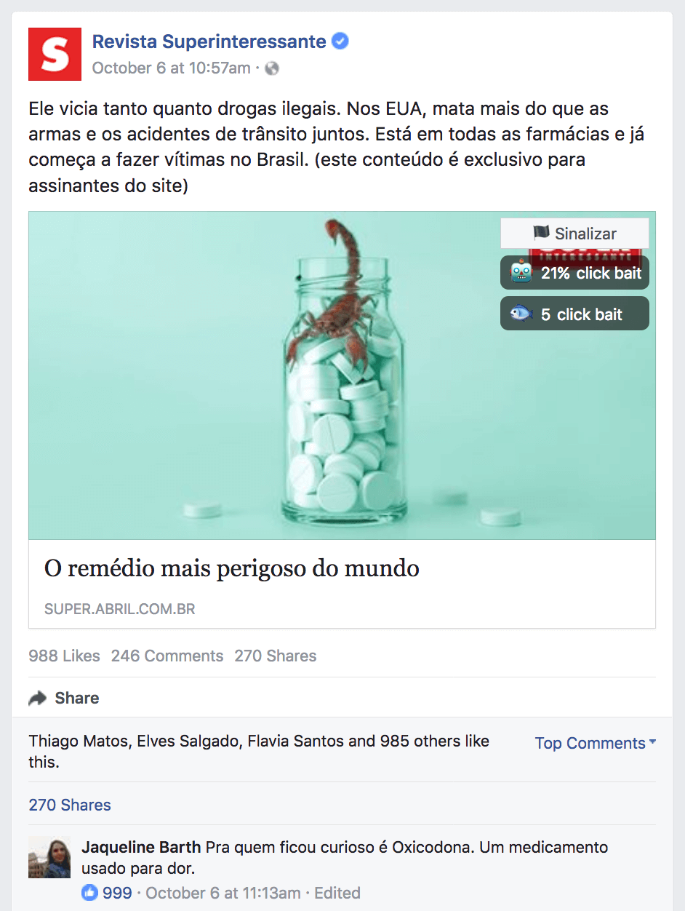

O Detector de Fake News é uma extensão para o Chrome e Firefox que permite classificar direto do seu feed do Facebook as notícias como Legítimas, Fake News, Click Bait, Extremamente Tendenciosa ou Sátira.
Ao classificar uma notícia, outras pessoas que tem a extensão vão ver a sua sinalização, ficarão mais atentas e também poderão sinalizar. Essas informações são guardadas em um banco de dados, e são lidas pelo nosso robô, o Robinho.
O Robinho se baseia na informação dada por nós humanos, e vai aprendendo com o tempo a classificar automaticamente uma notícia como Fake News, Click Bait, etc, pelo seu texto. Com isso, mesmo novas notícias que ninguém nunca viu poderão ser rapidamente classificadas.
A extensão então mostra nas notícias do seu facebook a avaliação do robô e das pessoas:
Quanto mais você avalia as notícias, mais você contribui para a construção de uma base para ensinar e melhorar o Robinho, que ainda está bem no início do seu desenvolvimento, veja, ele ainda é um bebê robô:

Em 2016, durante a eleição dos Estados Unidos, muitos sites de fake news foram criados, e propagados através das redes sociais, principalmente do Facebook, mas foram muitos, muitos mesmo! Tanto que as Fake News tiveram mais cliques que as notícias reais.
Um dos casos mais icônicos foi o de um morador da Macedônia que tinha mais de 100 sites de fake news registrados, chegando a ganhar milhares de dólares por mês com anúncios.
A maioria desses sites era pró-Trump, por que? O Macedônio era um defensor ferrenho do Trump? Não! Simplesmente porque o eleitorado do Trump era mais sucetível a acreditar e propagar Fake News.
Agora, em 2018, teremos eleições no Brasil, e há muitas páginas por aí que não se preocupam em conferir as fontes, e podem se aproveitar (e já estão se aproveitando) da mesma estratégia que beneficiou Donald Trump.
Além disso, ainda temos muitas publicações extremamente tendenciosas de todos os lados e os irritantes click-baits.
O Detector de Fake News é uma pequena iniciativa para tentar fazer alguma diferença na luta contra esse problema, unindo a boa vontade das pessoas (Crowdsourcing) com tecnologia (Machine Learning)
Só de baixar a extensão e sinalizar as notícias você já vai estar ajudando muito! Tanto outros usuários, quanto no desenvolvimento do Robinho.
Mas se você é programador ou cientista de dados, o Detector de Fake News é um projeto de código aberto que precisa muito da sua ajuda! Todos os repositórios estão disponíveis em: https://github.com/fake-news-detector.
Se você ficou interessado e tem dúvidas de como pode ajudar, me procure no twitter, @_rchaves_.